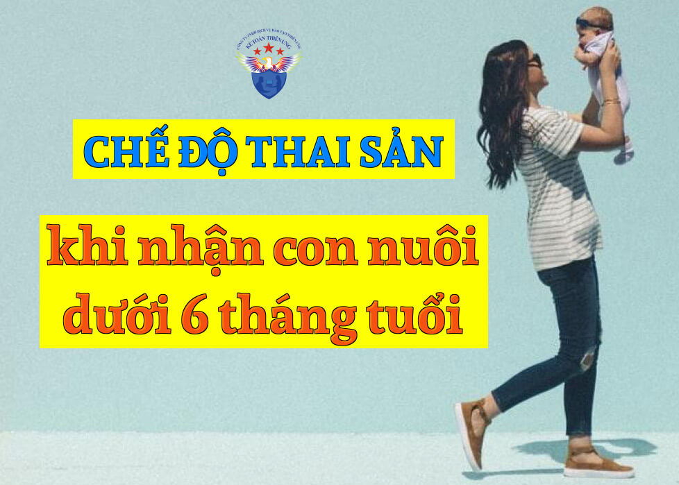

Quy định về Chế độ thai sản khi nhận nuôi con nuôi dưới 06 tháng tuổi mới nhất năm 2025 theo Luật Bảo hiểm xã hội số: 41/2024/QH15 có hiệu lực từ ngày 01/7/2025.
Chế độ thai sản khi nhận nuôi con nuôi dưới 06 tháng tuổi được quy định tại điều 56 của Luật BHXH số: 41/2024/QH15 như sau:
Điều 56. Chế độ thai sản khi nhận nuôi con nuôi dưới 06 tháng tuổi
1. Người lao động nhận nuôi con nuôi dưới 06 tháng tuổi thì được nghỉ việc hưởng chế độ thai sản kể từ ngày giao nhận con nuôi cho đến khi con đủ 06 tháng tuổi.
Trường hợp cả cha và mẹ cùng tham gia bảo hiểm xã hội bắt buộc đủ điều kiện hưởng chế độ thai sản quy định tại khoản 2 Điều 50 của Luật này thì chỉ cha hoặc mẹ được nghỉ việc hưởng chế độ thai sản.
Trong đó: khoản 2 Điều 50 của Luật BHXH số: 41/2024/QH15 như sau:
Điều 50. Đối tượng và điều kiện hưởng chế độ thai sản
...
2. Đối tượng quy định tại các điểm b, c, d và đ khoản 1 Điều này phải đóng bảo hiểm xã hội bắt buộc từ đủ 06 tháng trở lên trong thời gian 12 tháng liền kề trước khi sinh con hoặc nhận con khi nhờ mang thai hộ hoặc nhận nuôi con nuôi dưới 06 tháng tuổi.
2. Người lao động nhận nuôi con nuôi dưới 06 tháng tuổi không nghỉ việc thì chỉ được hưởng trợ cấp một lần theo quy định tại Điều 58 của Luật này.
Trong đó: Điều 58 của Luật BHXH số: 41/2024/QH15 quy định về Trợ cấp một lần khi sinh con, nhận con khi nhờ mang thai hộ hoặc nhận nuôi con nuôi dưới 06 tháng tuổi
Chi tiết các bạn xem tại đây: Trợ cấp một lần khi sinh con
Chi tiết các bạn xem tại đây: Trợ cấp một lần khi sinh con
